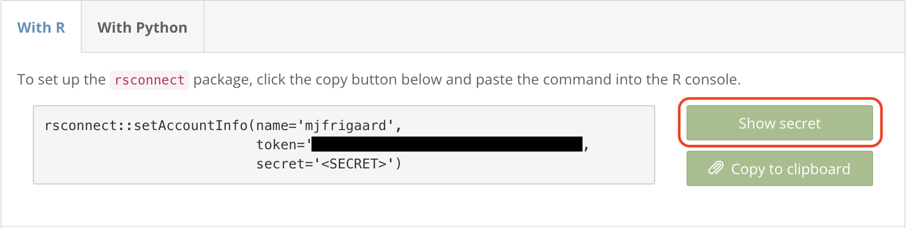

usethis::use_github_action("style")16 CI/CD
Continuous Integration (CI) and Continuous Deployment (CD) help automate software development aspects, especially testing and deployment. In the context of a Shiny app-package, CI/CD usually refers to GitHub Actions or Travis CI.1
Continuous integration
Automated Testing: CI can automate the tests (
testthatandshinytest2) for the code in your app-package, which is helpful when pushing a new feature or bug fix.Quality Assurance: CI helps maintain the code quality by running a series of ‘checks and balances’ to confirm updates and changes don’t break anything. Should something go wrong, CI will alert developers so they can fix it promptly.
Change Management: CI systems work hand-in-hand with version control systems (like Git), which makes it possible to track all the changes within a project. This makes sure every modification is checked and is safe to be included to the
mainapp-package.
Continuous deployment
Automated Deployment: Once CI confirms the changes are safe, CD can automatically deploy your updated Shiny app-package to a package management system or Shiny server, which means that the updated version becomes available to users without any manual intervention.
Consistent Updating: CD ensures that users experience new features and fixes much faster. Improvements are deployed as soon as they are made and tested, which leads to a more responsive development process.
Streamlined Development: CI and CD streamline the software development process so developers can focus more on building and less on testing and deploying.
Properly implemented CI/CD is like a well-oiled machine, where each part works seamlessly with the others, which saves time, reduces errors, and makes the process efficient and reliable.
16.1 GitHub Actions
GitHub Actions (or Actions, for short) is a feature provided by GitHub that enables automation of various development workflows. These workflows are defined in YAML files and can automate some of the repetitive tasks in the development lifecycle, right within a GitHub repository.
Actions allow us to create custom workflows to automatically build, test, and deploy our code. Workflows can be triggered by a push to a branch, a pull request, a specific time schedule, or another GitHub event.
Launch app with the shinypak package:
launch('16.1_cicd-style')16.1.1 Workflow fields
The YAML workflow file configures and defines the automated tasks run in a GitHub repository. Workflows typically include fields for building, testing, and deploying code, and are structured into several key sections:
16.1.1.1 on
“An event is a specific activity in a repository that triggers a workflow run.”
on defines the event(s) that trigger the workflow. Triggers can be push and/or pull events to specific branches, creating a release, commenting on an issue, or even configured to run at scheduled times.
on:
push:
branches: [ main ]
pull_request:
branches: [ main ]16.1.1.2 name
name is an optional field to identify a workflow in the Actions tab of the GitHub repository. If name is not provided, GitHub will use the file path.
name: shiny16.1.1.3 jobs
“A job is a set of steps in a workflow that is executed on the same runner.”
The job and it’s identifier (check) are used to reference the runner, in this example it’s ubuntu-latest.
jobs:
check:
runs-on: ubuntu-latestThe matrix directive can be used to run jobs across different operating systems, programming language versions, etc. (fail-fasle: false means the workflow will continue running even if one of the matrix jobs fails).
jobs:
check:
runs-on: ${{ matrix.config.os }}
name: ${{ matrix.config.os }} (${{ matrix.config.r }})
strategy:
fail-fast: false
matrix:
config:
- {os: macos-latest, r: 'release'}
- {os: windows-latest, r: 'release'}
- {os: ubuntu-latest, r: 'release'}16.1.1.4 steps
“Steps can run commands, run setup tasks, or run an action in your repository, a public repository, or an action published in a Docker registry. Not all steps run actions, but all actions run as a step.”
steps define a series of tasks or actions that the job will execute. These steps check out the code, set up an R environment, and installs a local package
steps:
- uses: actions/checkout@v2
- name: Set up R
uses: r-lib/actions/setup-r@v2
- name: Install package
run: |
install.packages('remotes')
remotes::install_local('.')
shell: Rscript {0}
What is
shell: Rscript {0}?
name: Install packages
run: |
pkgs <- c('glue', 'cli')
install.packages(pkgs)
shell: Rscript {0}The command install.packages(pkgs) is run as an R script:
shellspecifies which command-line interpreter (bash,pwsh,python, orRscript) to use for theruncommandsRscriptis the command-line tool provided by R to execute R scripts and commands in a non-interactive environment.{0}is a placeholder for the R commands written in therunsection.
16.1.2 Workflow permissions
In order for workflows to run, we’ll need to make sure Actions have read and write permissions. We can do this by clicking on the repository’s Settings tab, then expand the Actions menu and select General:

In the General settings, we want to confirm the workflow has Read and write permissions permissions (if this needs to be been changed, be sure to click Save).

Now our workflows can commit and push changes to the repository.
16.1.3 use_github_action()
In R packages, we can set up the GitHub Action infrastructure with usethis::use_github_action(). The name can be any of the workflow files available at r-lib/actions. The first workflow we’ll be demonstrating can be used to automate the code style in an app-package.
✔ Setting active project to '/projects/apps/moviesApp'
✔ Creating '.github/'
✔ Adding '*.html' to '.github/.gitignore'
✔ Creating '.github/workflows/'
✔ Saving 'r-lib/actions/examples/style.yaml@v2' to '.github/workflows/style.yaml'The output tells us a local .github/workflows/style.yaml file has been copied from the r-lib/actions/examples/style.yaml@v2 into the .github/workflows folder:
.github/
└── workflows
└── style.yaml
2 directories, 1 fileThe documentation for the style.yaml@v2 file tells us this workflow,
“styles the R code in a package, then commits and pushes the changes to the same branch.”
The code styling in this workflow is handled by the styler package, which “formats your code according to the tidyverse style guide.”
Three functions in the 16.1_cicd-style branch have altered to have zero style (R/display_type.R, R/mod_var_input.R, and R/test_logger.R). You can copy the code for these functions in the chunk below:2
show/hide no-style code
# display_type ----
display_type <- function(run = "w") {
if (run == "p") {
options(shiny.launch.browser = .rs.invokeShinyPaneViewer)
} else if (run == "b") {
options(shiny.launch.browser = .rs.invokeShinyWindowExternal)
} else if (run == "w") {
options(shiny.launch.browser = .rs.invokeShinyWindowViewer)
} else {
options(shiny.launch.browser = NULL)
}
shinyViewerType <- getOption("shiny.launch.browser") |>
attributes() |> unlist() |> unname()
cli::cli_alert_info("shinyViewerType set to {shinyViewerType}")
}
# mod_var_input_ui ----
mod_var_input_ui <- function(id) {
ns <- NS(id)
tagList(
selectInput(
inputId = ns("y"),
label = "Y-axis:",
choices = c("IMDB rating" = "imdb_rating",
"IMDB number of votes" = "imdb_num_votes",
"Critics Score" = "critics_score",
"Audience Score" = "audience_score",
"Runtime" = "runtime"), selected = "audience_score"
),
selectInput(inputId = ns("x"),
label = "X-axis:",
choices = c("IMDB rating" = "imdb_rating",
"IMDB number of votes" = "imdb_num_votes",
"Critics Score" = "critics_score",
"Audience Score" = "audience_score",
"Runtime" = "runtime"), selected = "imdb_rating"
),
selectInput(inputId = ns("z"),
label = "Color by:",
choices = c("Title Type" = "title_type",
"Genre" = "genre",
"MPAA Rating" = "mpaa_rating",
"Critics Rating" = "critics_rating",
"Audience Rating" = "audience_rating"), selected = "mpaa_rating"
),
sliderInput(inputId = ns("alpha"),
label = "Alpha:",
min = 0, max = 1, step = 0.1, value = 0.5
),
sliderInput(
inputId = ns("size"),
label = "Size:", min = 0, max = 5, value = 2
),
textInput(inputId = ns("plot_title"),
label = "Plot title",
placeholder = "Enter plot title"
)
)
}
# test_logger ----
test_logger <- function(start = NULL, end = NULL, msg) {
if (is.null(start) & is.null(end)) {
cat("\n")
logger::log_info("{msg}")
} else if (!is.null(start) & is.null(end)) {
cat("\n")
logger::log_info("\n[ START {start} = {msg}]")
} else if (is.null(start) & !is.null(end)) {
cat("\n")
logger::log_info("\n[ END {end} = {msg}]")
} else {
cat("\n")
logger::log_info("\n[ START {start} = {msg}]")
cat("\n")
logger::log_info("\n[ END {end} = {msg}]")
}
}We’ll make one small change to style.yaml before pushing it to GitHub. Instead of having the workflow automatically commit and push the styled code changes to the same branch, we’ll limit the code styling to the 16.1_cicd-style branch:
on:
push:
branches: [16.1_cicd-style]
paths: ["**.[rR]", "**.[qrR]md", "**.[rR]markdown", "**.[rR]nw", "**.[rR]profile"]This change ensures our style workflow will be triggered only for pushes to the specified branches (and when changes are made to files with the specified extensions in path).
After saving these changes to .github/workflows/style.yaml, we’ll add, commit, and push the changes to GitHub,
git add .
git commit -m "updates to style workflow"[16.1_cicd-style 899bd38] updates to style workflow
4 files changed, 43 insertions(+), 45 deletions(-)git pushEnumerating objects: 17, done.
Counting objects: 100% (17/17), done.
Delta compression using up to 12 threads
Compressing objects: 100% (8/8), done.
Writing objects: 100% (9/9), 950 bytes | 25.00 KiB/s, done.
Total 9 (delta 6), reused 0 (delta 0), pack-reused 0
remote: Resolving deltas: 100% (6/6), completed with 6 local objects.
To https://github.com/mjfrigaard/moviesApp.git
d366e0f..899bd38 16.1_cicd-style -> 16.1_cicd-styleIf we view the Actions tab, we’ll see the workflow listed with the name of our commit message:

Clicking on the workflow reveals the following:

The style widget contains each step in the workflow file. If we click on it we can see each step executed in real-time. Below we can see the dependency lockfile from pak:

The actual styling comes is in the Style step:

When the workflow has finished, we can pull the style changes to our local branch and view the styled files:3
git pullremote: Enumerating objects: 4, done.
remote: Counting objects: 100% (4/4), done.
remote: Total 4 (delta 3), reused 4 (delta 3), pack-reused 0
Unpacking objects: 100% (4/4), 450 bytes | 56.00 KiB/s, done.
From https://github.com/mjfrigaard/moviesApp
899bd38..0ad97cf 16.1_cicd-style -> origin/16.1_cicd-style
Updating 899bd38..0ad97cf
Fast-forward
R/display_type.R | 13 +++----------
R/mod_var_input.R | 30 ++++++++++++++++++++----------
R/test_logger.R | 30 ++++++++++--------------------
3 files changed, 33 insertions(+), 40 deletions(-)16.2 A Shiny workflow
We’ll be adapting the example GitHub Action workflow file for deploying a Shiny application. Before we get to the workflow file, we need to address a few settings and configurations that need to take place outside of the workflow file.
Launch app with the shinypak package:
launch('16.2_cicd-shiny')16.2.1 Creating repository secrets
We need to make sure our rsconnect secrets are stored with the GitHub repository (so we can access them from within the workflow file). To do this, we’re going to return to the Settings tab on the moviesApp repository, expand Secrets and variables under Security, and select Actions:4

moviesApp repositoryUse New repository secret to create three new secrets: RSCONNECT_USER, RSCONNECT_TOKEN, and RSCONNECT_SECRET. You can access these in your shinyapps.io account:

When you’re finished, should see the following three Repository secrets:
moviesApp16.2.2 Enable private repositories
We also need to make sure our shinyapps.io account allows us to install from private GitHub repositories during a workflow deployment. We can do this in the Profile menu item in our dashboard:
Clicking Update Authentication will open your Posit profile settings, where you can enable private repositories.

16.2.3 Generate renv.lock
The documentation for ‘Shiny App Deployment’ indicates we need to create a renv lockfile in the 16.2_cicd-shiny branch.5
We can create the lockfile with the code below:
install.packages('renv')
renv::init(force = TRUE)This project contains a DESCRIPTION file.
Which files should renv use for dependency discovery in this project?
1: Use only the DESCRIPTION file. (explicit mode)
2: Use all files in this project. (implicit mode)We’re going to use the explicit mode, because the dependencies in the DESCRIPTION should be all that’s needed to run and deploy the application.
Selection: 1- Using 'explicit' snapshot type. Please see `?renv::snapshot` for more details.
This project already has a private library. What would you like to do?
1: Activate the project and use the existing library.
2: Re-initialize the project with a new library.
3: Abort project initialization.We will start fresh and create a new project library:
Selection: 2
- Resolving missing dependencies ...After renv has discovered and installed the dependencies, the R session will restart and we’ll see the following new folder/files:
├── .Rprofile
├── renv/
│ ├── activate.R
│ └── settings.json
└── renv.lock- 1
-
.Rprofilecontains a call tosource("renv/activate.R"), which manages the project-level dependencies
- 2
-
renvsettings
- 3
-
renvlockfile
When using renv in package development, we want to be sure to run renv::install() and renv::update():
renv::install()- There are no packages to install.renv::update()- Checking for updated packages ... Done!
- All packages appear to be up-to-date.16.2.4 shiny-deploy.yaml
We can include the ‘Shiny App Deployment’ workflow file in moviesApp with usethis::use_github_action("shiny-deploy"):6
usethis::use_github_action("shiny-deploy")✔ Creating '.github/'
✔ Adding '^\\.github$' to '.Rbuildignore'
✔ Adding '*.html' to '.github/.gitignore'
✔ Creating '.github/workflows/'
✔ Saving 'r-lib/actions/examples/shiny-deploy.yaml@v2' to '.github/workflows/shiny-deploy.yaml'This example workflow file is designed to deploy a Shiny application to a server. We’re going to make a few changes to shiny-deploy.yaml so it will deploy the application stored in the 16.2_cicd-shiny branch.
The example shiny workflow includes calls to rsconnect::setAccountInfo() and rsconnect::deployApp(). We’ll perform a sanity check and confirm we can deploy the application using the information we’ve collected:
Start by entering your rsconnect info:
install.packages('rsconnect') rsconnect::setAccountInfo( name = "mjfrigaard", token = "YOUR TOKEN", secret = "YOUR SECRET")- Then try to deploy the application using
rsconnect::deployApp():
library(moviesApp) rsconnect::deployApp( appName = "moviesAppCICD", account = "mjfrigaard", server = "shinyapps.io", forceUpdate = TRUE)- Reading the deployment log will tells us if the secret, token, configuration, and lockfile are all working:
- Then try to deploy the application using
── Preparing for deployment ──────────────────────────────────────────────────
✔ Deploying "moviesAppCICD" using "server: shinyapps.io / username: mjfrigaard"
ℹ Bundling 50 files: .github/workflows/shiny-deploy.yaml, .Rbuildignore, ...,
tests/testthat.R, and vignettes/test-specs.Rmd
ℹ Capturing R dependencies with renv
✔ Found 99 dependencies
✔ Created 2,431,325b bundle
ℹ Uploading bundle...
✔ Uploaded bundle with id 8130675
── Deploying to server ─────────────────────────────────────────────────────────
Waiting for task: 1372980209
building: Processing bundle: 8130675
building: Building image: 9770352
building: Fetching packages
building: Installing packages
building: Installing files
building: Pushing image: 9770352
deploying: Starting instances
unstaging: Stopping old instances
── Deployment complete ─────────────────────────────────────────────────────────
✔ Successfully deployed to <https://mjfrigaard.shinyapps.io/moviesAppCICD/>Making sure my application will deploy locally with the code I plan on putting in a workflow file makes me confident it run when it’s triggered. Below we’ll adapt the .github/workflows/shiny-deploy.yaml file to deploy moviesApp.
16.2.4.1 Trigger
on:
push:
branches: [16.2_cicd-shiny]
name: shiny- The event we want the workflow triggered
onis apushto the16.2_cicd-shinybranch
- We’ll change the
nametoshiny
16.2.4.2 Jobs
jobs:
shiny-deploy:
runs-on: ubuntu-latest
env:
GITHUB_PAT: ${{ secrets.GITHUB_TOKEN }}jobsremains unchanged, but the identifier should match thename. 7
16.2.4.3 Steps
steps:
- uses: actions/checkout@v3
- uses: r-lib/actions/setup-pandoc@v2
- uses: r-lib/actions/setup-r@v2
with:
use-public-rspm: true
- uses: r-lib/actions/setup-renv@v2
- name: Install rsconnect
run: install.packages("rsconnect")
shell: Rscript {0}- Check out the repository code
- Set up Pandoc for document conversions
- Set up R environment
use-public-rspmis the public RStudio package manager
- Set up
renvto manage the project-specific dependencies captured inrenv.lock
Install rsconnectthe step to deploy our app to the Shiny serverruninstalls thersconnectpackage
Now we’re ready to update the information in our .github/workflows/shiny-deploy.yaml file.
- name: Authorize and deploy app
env:
APPNAME: moviesAppCICD
ACCOUNT: mjfrigaard
SERVER: shinyapps.io Authorize and deploy appdefines the step to deploy our Shiny app
envsets up the environment variablesAPPNAME,ACCOUNT, andSERVER
The final run step sets the account information using rsconnect::setAccountInfo() and deploys the app to the specified server using rsconnect::deployApp():
run: |
rsconnect::setAccountInfo("${{ secrets.RSCONNECT_USER }}", "${{ secrets.RSCONNECT_TOKEN }}", "${{ secrets.RSCONNECT_SECRET }}")
rsconnect::deployApp(appName = "${{ env.APPNAME }}", account = "${{ env.ACCOUNT }}", server = "${{ env.SERVER }}", forceUpdate = TRUE)
shell: Rscript {0}git add .
git commit -m "shiny deploy workflow"[16.2_cicd-shiny 7953a5c] shiny deploy workflow
10 files changed, 2130 insertions(+)
create mode 100644 .Rprofile
create mode 100644 .github/.gitignore
create mode 100644 .github/workflows/shiny-deploy.yaml
create mode 100644 renv.lock
create mode 100644 renv/.gitignore
create mode 100644 renv/activate.R
create mode 100644 renv/settings.json
create mode 100644 rsconnect/shinyapps.io/mjfrigaard/moviesAppCICD.dcfWe can see the workflow running on the Actions tab of the moviesApp repository:

When it’s finished, we can see the deployment log from the workflow looks similar to the log we saw locally:

16.3 A Shiny/Docker workflow
In the previous chapter we covered Docker, which builds and application in an image and containerizes the deployment. We can combine Docker and GitHub Actions to automated the deployment lifecycle of your app, which minimizes any risks of environmental discrepancies (avoiding the “it works on my machine” problem) and manual deployment processes (if something goes wrong after a workflow run, rolling back to a previous version in Git is straightforward).
16.3.1 Secrets and tokens
Most of the steps below are covered in the excellent blog post by Nicola Rennie8 I’ve updated the contents to work with a Shiny app-package.
To make sure our RSCONNECT_USER, RSCONNECT_TOKEN, and RSCONNECT_SECRET travels with our Dockerfile, we can store these as environmental variables with Sys.setenv():
Sys.setenv(RSCONNECT_USER = '<username>',
RSCONNECT_TOKEN = '<token>',
RSCONNECT_SECRET = '<secret>')These will be passed to rsconnect::setAccountInfo() in our deploy.R file.
16.3.2 deploy.R
deploy.R contains the calls to rsconnectL::setAccountInfo() and rsconnect::deployApp() we had in our previous workflow file. Sys.getenv() will retrieve the username, token, and secret stored with Sys.setenv():
setAccountInfo(name = Sys.getenv("RSCONNECT_USER"),
token = Sys.getenv("RSCONNECT_TOKEN"),
secret = Sys.getenv("RSCONNECT_SECRET"))
deployApp(appDir = ".",
appName = "moviesAppDockerCiCd",
account = "mjfrigaard",
server = "shinyapps.io",
forceUpdate = TRUE)The deploy.R script should be placed in the root folder of moviesApp.
16.3.3 Dockerfile
The Dockerfile will look similar to the example in the Docker chapter, but with a few important changes:
- We’ll include
rsconnectandbslibin the list of packages to install - The
/home/moviesAppDockerCiCddirectory is not only the image location we’ll be launching the application from, it’s also the URL for the deployed app:https://username.shinyapps.io/moviesAppDockerCiCd/
- The final command runs the application from
deploy.R
FROM rocker/shiny
RUN R -e 'install.packages(c("rlang", "stringr", "shiny", "ggplot2", "remotes", "rsconnect", "bslib"))'
RUN mkdir /home/moviesAppDockerCiCd
ADD . /home/moviesAppDockerCiCd
WORKDIR /home/moviesAppDockerCiCd
RUN R -e 'remotes::install_local(upgrade="never")'
EXPOSE 8180
CMD Rscript deploy.R16.3.4 docker.yml
name: docker-shiny, moviesapp
on:
push:
branches: [ 16.3_cicd-docker ]
jobs:
docker:
runs-on: ubuntu-latest
steps:
- uses: actions/checkout@v3
- name: Build image
run: docker build -t moviesapp . Add a
namefor the Docker/Shiny workflow
Specify the triggering event the workflow will run
onThe
jobwill run onubuntu-latest(withdockerid)Checkout the code
Build the docker image with
docker build
The final execute step is runs docker run and passes our environment variables to the secrets we have stored in GitHub (i.e., with secrets.<SECRET_NAME>):
- name: execute
run: >
docker run -e RSCONNECT_USER=${{ secrets.RSCONNECT_USER }} -e RSCONNECT_TOKEN=${{ secrets.RSCONNECT_TOKEN }} -e RSCONNECT_SECRET=${{ secrets.RSCONNECT_SECRET }} moviesapp
16.3.5 Tip: Check app dependencies
rsconnect has a handy appDependencies() function (available with rsconnect:::) that returns a data.frame of the dependencies for an application:
rsconnect:::appDependencies(appDir = ".")# Package Version Source Repository
# 1 AsioHeaders 1.22.1-2 CRAN https://packagemanager.posit.co/cran/latest
# 2 MASS 7.3-60 CRAN https://packagemanager.posit.co/cran/latest
# 3 Matrix 1.6-4 CRAN https://packagemanager.posit.co/cran/latest
# 4 R6 2.5.1 CRAN https://packagemanager.posit.co/cran/latest
# 5 RColorBrewer 1.1-3 CRAN https://packagemanager.posit.co/cran/latest
# 6 Rcpp 1.0.11 CRAN https://packagemanager.posit.co/cran/latestPassing appDependencies() function in your app-package directory will tell you if any packages have missing Source or Repository values (this can cause the deployment to fail).
I also recommend running attachment::att_amend_desc() to capture all the dependencies in the DESCRIPTION. For example, att_amend_desc() added the following packages to the Suggests field in the DESCRIPTION:9
[+] 9 package(s) added: cli, tools, dplyr, ggplot2movies, glue, purrr, tibble,
tidyr, waldo.When the workflow runs, we see a message about these packages not being installed, but this does not interfere with the application launching (the packages listed are used in vignettes/, data-raw/, and tests/).

16.4 Recap
GitHub Actions can be used to set up the necessary R environment and dependencies required to deploy the application in your app-package, while allowing secure account credentials stored in GitHub secrets. The workflows in this chapter are only triggered by changes to the 16.1_cicd-style, 16.2_cicd-shiny, and 16.3_cicd-docker branches of the moviesApp repository, which is like having a personal assistant who streamlines a secure deployment process, which allows you to focus more on developing your app.
Read about CI/CD in the rhino framework in this appendix section
This chapter will only cover CI/CD with GitHub Actions. Travis-CI has been around longer than GitHub Actions, and if you’d like to compare the two, I recommend this article.↩︎
We’ll be covering code styling in the Code tools chapter.↩︎
You can find more examples of common GitHub Actions for R packages in r-lib/actions/examples.↩︎
GitHub secrets should be specified by the user following the instructions in the Creating secrets for a repository article.↩︎
“This action assumes you have an
renvlockfile in your repository that describes the R packages and versions required for your Shiny application.” - Shiny App Deployment↩︎Instructions for the GitHub Action Shiny deployment can be found here↩︎
run-onis the latest Ubuntu runner andenvis theGITHUB_PATenvironment variable is your GitHub personal access token (access a secret withsecrets.<SECRET_NAME>)↩︎Automatically deploying a Shiny app for browsing #RStats tweets with GitHub Actions. Nicola Rennie. October 3, 2022. https://nrennie.rbind.io/blog/2022-10-05-automatically-deploying-a-shiny-app-for-browsing-rstats-tweets-with-github-actions/↩︎
att_amend_desc()adds adevfolder with a YAML config file (but this can be removed before building/deploying).↩︎
16.1.1.5 Comments
Lines beginning with
#will not be executed. It’s common to provide 1) a reference to the workflow source (r-lib/actionsin this case) and 2) a link for help with debugging build failures.